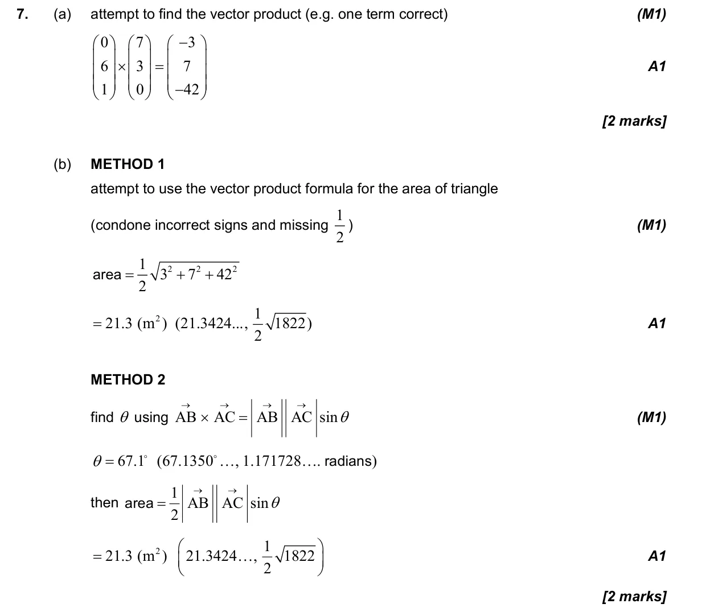
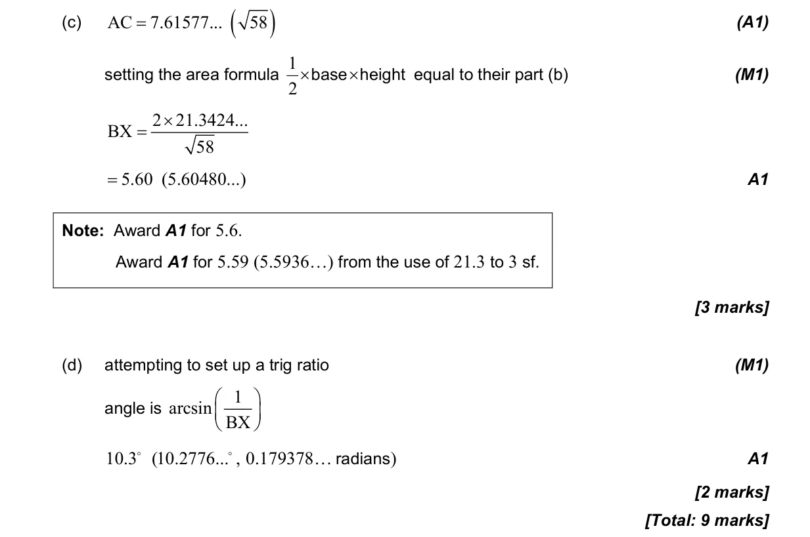

9 marks P1 TZ1 Calculator 3.13 Scalar and vector products3.10 Vectors and scalars: representation and components3.1 3D space, volume, angles, distance and midpoints3.2 2D and 3D trigonometry, sine rule, cosine rule and area Question Hide breakdown abcd Markscheme 